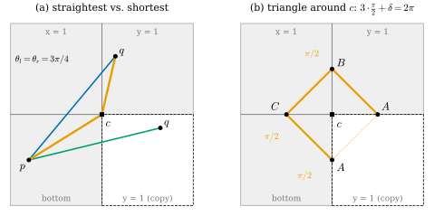
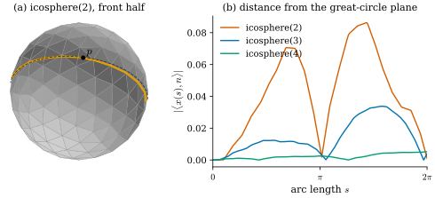

44.3 Discrete Straightest Geodesics
Goals
- simplicial surface 위의 discrete curve를 정의하고, face, edge, vertex에서 discrete geodesic curvature를 정의해 그 부호를 Section 39.2의 \(\kappa_g\)와 맞출 수 있다.
- discrete straightest geodesic이 한 점과 방향에서 유일하게 계속된다는 것(initial value problem)을 증명하고, ray와 edge의 교차와 vertex 규칙으로 tracing algorithm을 구현할 수 있다.
- straightest geodesic과 shortest path가 cone vertex와 saddle vertex에서 어떻게 어긋나는지 증명할 수 있다.
- discrete curve가 둘러싼 영역에서 angle defect와 discrete geodesic curvature의 합이 \(2\pi\)라는 Gauss–Bonnet 꼴의 등식을 증명하고 쓸 수 있다.
Prerequisites
- Section 44.2: locally shortest path의 face·edge 조건 Proposition 44.2.3, vertex 조건 Proposition 44.2.5와 Corollary 44.2.6, 펼침 Lemma 44.2.2.
- geodesic curvature와 그 부호 Proposition 39.2.4(곡선을 거꾸로 돌면 부호가 바뀐다 Exercise 39.2.1), plane curve의 turning angle Definition 32.3.1.
- discrete Gauss–Bonnet theorem with boundary Theorem 40.2.6와 discrete local Gauss–Bonnet Corollary 40.2.9, barycentric coordinates Definition 33.1.9.
Motivation
Section 44.2의 shortest path는 두 끝점을 주는 boundary value problem에 잘 맞았다. 그러나 한 점과 방향을 주고 “곧게 나아가라”는 initial value problem에는 맞지 않는다. vertex에 정확히 닿은 경로는 cone vertex에서 계속될 수 없고(Corollary 44.2.6(a)), saddle vertex에서는 계속하는 방법이 무수히 많다(같은 Corollary (c)). 측량에서 나침반을 들고 한 방향으로 걷는 것, 화면의 한 점에서 표면을 따라 ray를 쏘는 것은 initial value problem이다.
Section 44.1에서 “곧다”는 두 가지로 쓸 수 있었다. 곡선이 surface 안에서 옆으로 꺾이지 않는다(\(\kappa_g = 0\))는 기하적인 말과, 일정한 속력으로 지날 때 가속도가 surface에 수직이라는 동역학적인 말이다(Proposition 44.1.9). 뒤의 것은 Section 44.5에서 covariant derivative로 다시 쓴다 [CMU-DDG L21–22] slide 36. 이 절은 앞의 것, 곧 \(\kappa_g\)를 mesh로 옮긴다. 핵심은 vertex에서 “꺾이지 않았다”를 무엇으로 정할지다.
Discrete Curves on a Simplicial Surface
Definition 44.3.1 (discrete curve on a surface). simplicial surface \(\mathcal{K}\)와 discrete immersion \(\mathbf{x}\)(Definition 38.4.7)에 대하여, 연속 곡선 \(\gamma\colon[a, b] \to \abs{\mathcal{K}}\)가 분할 \(a = s_0 \lt s_1 \lt \cdots \lt s_m = b\)를 가져 각 \(\gamma([s_{k-1}, s_k])\)가 어떤 하나의 닫힌 face 안의 선분이면 \(\gamma\)를 \(\mathcal{K}\) 위의 discrete curve on a surface(곡면 위의 이산 곡선)라 한다. 선분이 바뀌는 점 \(\gamma(s_k)\)를 \(\gamma\)의 corner라 한다.
Chapter 32의 discrete curve(Definition 32.2.8)는 평면의 꺾은선이었다. 여기서는 꺾은선이 surface 위에 놓인다. corner는 face의 안, edge의 안, vertex의 세 종류다. 정의는 곡선이 edge를 따라가기를 요구하지 않으므로, 곡선은 face를 가로지르고 한 face를 지나는 동안 여러 번 꺾일 수도 있다. 구현에서는 각 corner를 그 점을 품은 가장 작은 simplex(face, edge, vertex)와 그 simplex에 대한 barycentric coordinate의 쌍으로 저장한다(Definition 33.1.9) [CMU-DDG L21–22] slide 38.
이제 corner에서 곡선이 얼마나 꺾였는지를 잰다. 대부분의 점에서 polyhedral surface는 평평하다 [CMU-DDG L21–22] slide 39. face 안의 corner에서는 그 face의 평면에서, edge 위의 corner에서는 두 face를 펼친 평면(Lemma 44.2.2)에서, plane curve와 같이 turning angle을 재면 된다(Definition 32.3.1). vertex에서는 star를 펼칠 수 없다. 그래서 각으로 말한다. 곡선이 corner \(y\)로 들어왔다가 나가면 \(y\) 둘레의 각 \(\Theta(y)\)(face나 edge의 점에서는 \(2\pi\), vertex \(i\)에서는 \(\Theta_i\))가 진행 방향의 왼쪽 \(\theta_l\)과 오른쪽 \(\theta_r\)로 나뉜다. 평평한 점에서 왼쪽으로 \(\kappa\)만큼 꺾으면 \(\theta_l = \pi - \kappa\), \(\theta_r = \pi + \kappa\)이므로 \(\kappa = (\theta_r - \theta_l)/2\)이다. 같은 식을 vertex에서도 정의로 쓴다.
Definition 44.3.2 (discrete geodesic curvature). boundary가 없는 oriented mesh 위의 discrete curve \(\gamma\)의 corner \(y\)(양 끝점이 아닌 점)에서 왼쪽과 오른쪽 각을 \(\theta_l(y), \theta_r(y)\)라 하자. “왼쪽”은 orientation이 주는 face normal \(\mathbf{N}\)(닫힌 mesh에서는 바깥쪽)에 대해 진행 방향을 \(+90^\circ\) 돌린 쪽, 곧 \(\mathbf{N}\times\mathbf{t}\) 쪽이다.
를 \(y\)에서 \(\gamma\)의 discrete geodesic curvature(이산 측지곡률)라 한다. corner가 아닌 점에서는 \(\kappa_g = 0\)으로 둔다.
정의에 대한 설명 셋. (i) 부호: face와 edge의 점에서 \(\kappa_g\)는 펼친 평면의 signed turning angle이고, 왼쪽(\(\mathbf{N}\times\mathbf{t}\) 쪽)으로 꺾으면 양수다. Section 39.2의 smooth \(\kappa_g = \inner{\mathbf{t}'}{\mathbf{N}\times\mathbf{t}}\)와 같은 부호다. (ii) 크기: \(\kappa_g(y)\)는 각이다. turning angle처럼 \(\kappa_g\,ds\)를 corner 근처에서 적분한 값에 해당하는 integrated quantity다(Definition 32.3.5의 \(\kappa^A\)와 같은 종류). (iii) vertex에서의 정규화: 강의 슬라이드는 vertex에서 양쪽 각이 같다는 조건 \(\theta_l = \theta_r\)을 straightest의 조건으로 쓴다(slide 40, [Polthier98]를 인용). [Polthier98]은 vertex의 값을 \(\tfrac{2\pi}{\Theta_i}\big(\tfrac{\Theta_i}2 - \theta_l\big)\)로 정규화한다(저자가 공개한 preprint에서 확인했다. 그 논문은 \(\theta_l\) 대신 두 각 가운데 하나를 쓰고, 다른 각을 고르면 부호가 바뀐다고 적는다). 이것은 (44.3.1)에 양수 \(2\pi/\Theta_i\)를 곱한 것이고, 평평한 점(\(\Theta = 2\pi\))에서는 둘이 같다. 이 study set은 (44.3.1)을 쓴다. 그러면 아래 (44.3.2)에서 한쪽 꺾임 \(\pi - \theta_l\)과 \(\kappa_g\)의 차가 \(\theta_l\)에 무관한 \(\delta_i/2\)가 되고, Gauss–Bonnet 꼴의 등식(Theorem 44.3.9)에서 곡선 위의 vertex가 언제나 절반씩 세어진다. [Polthier98]의 정규화로는 그 몫이 각에 비례한다(Theorem 44.3.9 뒤의 설명). 어느 정규화든 \(0\)이 되는 조건은 \(\theta_l = \theta_r\)로 같다.
vertex에서는 \(\theta_l + \theta_r = \Theta_i = 2\pi - \delta_i\)이므로
이다. 왼쪽만 보고 잰 꺾임 \(\pi - \theta_l\)과 오른쪽만 보고 잰 꺾임 \(\theta_r - \pi\)는 평평한 점에서는 같지만 vertex에서는 \(\delta_i\)만큼 다르다. \(\kappa_g\)는 그 둘의 평균이다. 아래 Non-example 44.3.4가 한쪽만 쓰면 무엇이 깨지는지 보이고, Theorem 44.3.9가 \(\pi - \theta_l\)이 어디에 쓰이는지 보인다.
Example 44.3.3 (plane polygons and a cube corner).
(a) planar grid(dgmesh.grid_mesh, \(\mathbf{N} = e_3\)) 위의 discrete curve는 평면의 꺾은선이고, 모든 corner(vertex를 포함해 \(\Theta = 2\pi\))에서 \(\kappa_g\)는 Definition 32.3.1의 turning angle이다. (b) unit cube의 corner \(c = (1, 1, 0)\)(\(\Theta = 3\pi/2\), \(\delta = \pi/2\))를 지나는 곡선이 왼쪽에 \(\theta_l = \pi/2\)(face 하나), 오른쪽에 \(\theta_r = \pi\)(face 둘)를 남기면 \(\kappa_g = \pi/4\)이다. 한쪽만 재면 왼쪽으로 \(\pi - \pi/2 = \pi/2\), 오른쪽으로 \(\pi - \pi = 0\)이다. \(\theta_l = \theta_r = 3\pi/4\)로 지나면 \(\kappa_g = 0\)이다.
Non-example 44.3.4 (one-sided turning at a vertex). vertex에서 꺾임을 왼쪽만 보고 \(\tilde\kappa := \pi - \theta_l\)로 정하면, 곡선을 거꾸로 돌 때의 부호 규칙이 깨진다. 거꾸로 돌면 왼쪽과 오른쪽이 바뀌므로 \(\tilde\kappa\)는 \(\pi - \theta_r\)가 된다. smooth \(\kappa_g\)는 방향을 뒤집으면 부호만 바뀌어야 하는데(Exercise 39.2.1(a)), \((\pi - \theta_l) + (\pi - \theta_r) = \delta_i\)이므로 \(\delta_i \ne 0\)이면 \(\pi - \theta_r \ne -(\pi - \theta_l)\)이다. 예를 들어 Example 44.3.3(b)의 곡선은 \(\tilde\kappa = \pi/2\)이고, 거꾸로 돌면 \(\tilde\kappa = 0\)이다. 반면 (44.3.1)은 \(\theta_l, \theta_r\)를 바꾸면 정확히 부호가 바뀐다(Exercise 44.3.3). 그래서 \(\tilde\kappa = 0\)을 “곧다”로 쓰면, 곧은 곡선을 거꾸로 돌면 곧지 않게 된다.
Discrete Straightest Geodesics
Definition 44.3.5 (discrete straightest geodesic). boundary가 없는 mesh 위의 discrete curve가 모든 점에서 \(\kappa_g = 0\)이면 discrete straightest geodesic(이산 최곧은 측지선)이라 한다. 곧 face 안에서 꺾이지 않고, edge에서 두 face를 펼치면 곧으며, vertex \(i\)를 지날 때 양쪽에 같은 각 \(\theta_l = \theta_r = \Theta_i/2\)를 남긴다 [Polthier98], [CMU-DDG L21–22] slide 40.
예: planar grid에서는 평면의 직선이 discrete straightest geodesic이다. grid vertex를 지나도 \(\Theta = 2\pi\)이므로 곧게 지난다. cube의 corner(\(\Theta = 3\pi/2\))를 지날 때는 양쪽에 \(3\pi/4\)씩을 남긴다. 비예: Example 44.1.4와 같은 이유로 polygon의 둘레(꺾이는 꼭짓점이 있다)는 아니다. vertex에서 한쪽에 face 하나만 남기는 cube 위의 곡선(Example 44.3.3(b)의 첫 곡선)도 아니다.
Proposition 44.3.6 (the initial value problem). boundary가 없는 mesh의 face \(f\) 안의 점 \(p\)와 \(f\)의 평면 안의 unit vector \(v\)에 대하여, 모든 \(L \gt 0\)에서 arc length로 매개화된 discrete straightest geodesic \(\gamma\colon[0, L] \to \abs{\mathcal{K}}\), \(\gamma(0) = p\), \(\gamma'(0) = v\)가 정확히 하나 있다.
Proof idea: 곡선은 face마다 선분이다. 선분이 끝나는 곳(edge나 vertex)에서 \(\kappa_g = 0\)이 다음 방향을 하나로 정한다. vertex에서는 들어온 방향의 반대에서 어느 쪽으로 돌든 \(\Theta_i/2\)를 돌면 같은 방향에 닿는다.
Proof. 곡선이 face \(g\) 안의 점 \(y\)에서 단위 방향 \(w\)로 나아가고 있다고 하자. \(\kappa_g = 0\)이므로 face 안에서는 꺾이지 않고, \(g\)는 유계인 볼록 triangle이라 ray \(y + tw\)는 처음으로 \(g\)의 boundary에 닿는 \(t^* \gt 0\)이 있다. 거기까지의 곡선은 그 선분뿐이다. (i) boundary의 점이 edge \(ab\)의 안에 있으면, 이웃한 face \(g'\)과 함께 펼친 평면에서 곧아야 하므로 다음 방향은 그 평면에서 \(w\)와 같은 방향, 곧 \(\mathbf{x}_b - \mathbf{x}_a\) 방향의 성분은 같고 edge에 수직인 성분이 \(g'\)의 평면으로 옮겨 간 방향 하나다((44.3.4)). (ii) vertex \(i\)이면, 각을 \(\mathbf{x}_i\)에서 \(-w\)의 방향을 \(0\)으로 하여 \(\Theta_i\)까지 한 바퀴 잰다(Proposition 44.2.5의 증명의 극좌표). 나가는 방향이 각 \(\alpha\)에 있으면 \(\theta_l, \theta_r\)는 \(\alpha\)와 \(\Theta_i - \alpha\)(순서는 orientation이 정한다)이고, \(\theta_l = \theta_r\)는 \(\alpha = \Theta_i/2\)와 같다. 그러므로 나가는 방향이 하나로 정해진다. 어느 경우든 곡선은 다음 face 안으로 계속된다. vertex에서 나가는 방향이 마침 edge의 방향이면 곡선은 그 edge(이웃한 두 face의 공통 변)를 따라 다음 vertex까지 가고, 거기서 (ii)를 다시 쓴다. 이것으로 매 단계의 연속과 유일성이 나온다.
Proof sketch. 남은 것은 길이 \(L\) 안에 선분이 유한개라는 것이다. 각 vertex \(i\)의 open star는 반지름 \(h_i\)의 원판을 품고(Proposition 40.1.10), 그 원판 안에서 곡선은 각 \(\Theta_i\)의 cone 위의 직선이다. cone의 직선은 vertex에서 볼 때 각 \(\pi\)만큼만 돌므로 star의 face를 유한번만 지난다. 원판들 밖에서는 mesh가 유한하므로 모든 점이 같은 반지름 \(r_0 \gt 0\)의 평평한 근방을 갖고, 그 안의 곡선은 선분 하나로 face를 둘 이하 지난다. 따라서 길이 \(L\)의 곡선은 유한개의 선분이다.
shortest path와 비교하면 차이가 분명하다. shortest의 “계속하기”는 cone vertex에서 불가능하고 saddle vertex에서 유일하지 않았다(Corollary 44.2.6). straightest의 계속하기는 어디서나 유일하다. 대신 straightest는 vertex에서 shortest가 아니게 된다.
Proposition 44.3.7 (straightest versus shortest at a vertex). boundary가 없는 mesh의 vertex \(i\)를 지나는 discrete straightest geodesic \(\gamma\)에 대하여
- (a) \(\delta_i \gt 0\)이면 \(\gamma\)는 \(\mathbf{x}_i\)에서 locally shortest가 아니다.
- (b) \(\delta_i = 0\)이면 \(\gamma\)는 \(\mathbf{x}_i\)에서 locally shortest이고, \(\mathbf{x}_i\)를 지나는 locally shortest path는 이것뿐이다.
- (c) \(\delta_i \lt 0\)이면 \(\gamma\)는 \(\mathbf{x}_i\)에서 locally shortest이지만, \(\mathbf{x}_i\)를 지나는 locally shortest path 가운데 straightest인 것은 들어오는 방향마다 하나뿐이다.
Proof. straightest이므로 \(\theta_l = \theta_r = \Theta_i/2\)이다. Proposition 44.2.5에서 \(\gamma\)가 locally shortest인 것은 \(\Theta_i/2 \ge \pi\), 곧 \(\delta_i \le 0\)과 같다. 이것이 (a)와 (b), (c)의 앞부분이다. 나머지는 Corollary 44.2.6: \(\delta_i = 0\)이면 허용된 나가는 방향이 \(\theta_l = \pi = \Theta_i/2\) 하나이고, \(\delta_i \lt 0\)이면 \(\theta_l \in [\pi, \Theta_i - \pi]\) 전체가 허용되는데 그 가운데 \(\theta_l = \Theta_i/2\)인 것만 straightest다.
Corollary 44.3.8 (convex polyhedra). boundary가 없는 mesh의 모든 vertex가 cone vertex(\(\delta_i \gt 0\))이면, 모든 locally shortest path는 discrete straightest geodesic이다. 거꾸로는 성립하지 않는다. vertex를 지나는 straightest geodesic은 locally shortest가 아니다.
Proof. locally shortest path는 cone vertex를 지나지 않고(Corollary 44.2.6(a)), face와 edge에서 곧다(Proposition 44.2.3). 곧 모든 corner에서 \(\kappa_g = 0\)이다. 거꾸로가 성립하지 않는 것은 Proposition 44.3.7(a)다.
강의 슬라이드는 이 관계를 “convex에서는 shortest가 straightest이지만 거꾸로는 아니고, saddle에서는 shortest가 straightest가 아닐 수도 있다”고 요약한다 [CMU-DDG L21–22] slide 62. Figure 44.3.1(a)가 cone 쪽의 예다.

ch44.trace_straightest), \(q\)는 그 끝점이다. 파랑과 초록은 \(p\)에서 \(q\)로 가는 두 shortest path로, 각각 옆면 \(x = 1\)과 \(y = 1\)의 사본을 지나며 이 그림에서 직선이다. (b) 주황 꺾은선은 세 edge 위의 \(A = (0.5, 1, 0)\), \(B = (1, 1, 0.5)\), \(C = (1, 0.5, 0)\)를 \(A \to B \to C \to A\)의 순서로 face마다 선분으로 이은 닫힌 곡선이다. \(A\)는 두 곳에 나타나고 점선이 그 둘을 잇는다. 볼 것: (a) 주황 경로는 \(c\)에서 양쪽에 \(3\pi/4\)씩 남기고 나간다. 두 shortest path의 길이는 \(1.4823\)으로 같고, straightest 경로의 \(1.6\)보다 짧다. (b) 곡선은 \(c\)를 왼쪽에 두고 돌며, 세 꼭짓점의 turning angle은 모두 \(+\pi/2\)이고, 그 합 \(3\pi/2\)와 안쪽의 \(\delta = \pi/2\)를 더하면 \(2\pi\)이다. 본문과의 연결: Proposition 44.3.7(a), Example 44.3.10, Theorem 44.3.9.Figure 44.3.1의 (a)를 보자. 주황 경로는 \(c\)에서 양쪽으로 같은 각을 남기므로, 어느 쪽에서 보아도 각 \(3\pi/4 \lt \pi\)의 볼록한 부채꼴을 지나간다. 그 부채꼴 안의 현이 지름길이고, 파란 선과 초록 선이 그 지름길이다. 두 선이 대칭으로 같은 길이인 것은 양쪽 각이 같기 때문이다. 오른쪽 (b)는 다음 절의 Gauss–Bonnet 꼴 등식을 보여 준다.
Straightest Curves and the Discrete Gauss–Bonnet Theorem
smooth surface의 Gauss–Bonnet theorem with boundary는 영역 안의 \(\int K\,dA\)와 boundary의 \(\int\kappa_g\,ds\)와 꼭짓점의 exterior angle을 더하면 \(2\pi\chi\)라고 말했다(Theorem 39.4.4). mesh에서는 안쪽의 curvature가 angle defect이고, boundary의 꺾임이 \(\pi - \theta_l\)이다(Theorem 40.2.6의 \(\tau_i = \pi - \Theta_i\)). Section 40.2는 boundary가 mesh의 edge인 경우를 다루었다. 이제 boundary가 face를 가로지르는 discrete curve여도 되게 한다.
Theorem 44.3.9 (Gauss–Bonnet for a region bounded by a discrete curve). boundary가 없는 oriented mesh 위의 simple closed discrete curve \(\gamma\)가 disk와 homeomorphic인 영역 \(R\)을 둘러싸고, \(\gamma\)의 방향은 \(R\)이 왼쪽에 있게 잡았다고 하자. corner \(y\)마다 \(\theta_l(y)\)는 \(R\) 쪽의 각이다. 그러면
이다. 두 줄은 서로 동치다. 합은 \(\gamma\)의 corner(꺾이지 않는 점은 \(0\)을 더한다)와, \(R\)의 안쪽에 있는 vertex, \(\gamma\) 위에 있는 vertex에 대한 것이다.
Proof. 먼저 mesh를 고쳐 \(\gamma\)가 edge path가 되게 한다. (1) face의 안에 있는 corner \(y\)마다, \(y\)를 품은 triangle(앞 단계에서 이미 나뉘었으면 그 작은 triangle)을 \(y\)와 세 꼭짓점을 잇는 선분으로 셋으로 나눈다. 그러면 \(\gamma\)의 모든 corner가 face의 boundary 위에 있으므로, \(\gamma\)가 각 face 안에서 지나는 부분은 boundary의 두 점을 잇는 현(chord)들이다. (2) \(\gamma\)의 corner와 \(\gamma\)가 edge를 건너는 점을 새 vertex로 넣고 각 face를 그 현들로 자른다. \(\gamma\)는 simple이므로 현들은 끝점에서만 만나고, 볼록한 triangle을 이런 현으로 자른 조각은 볼록한 polygon이다. (3) 각 조각의 안에 점 하나를 넣어 조각의 꼭짓점들과 이으면, 조각이 볼록하므로 퇴화하지 않는 triangle들로 나뉜다. 이 과정에서 옛 vertex의 각의 합은 그대로다(그 vertex에 모이는 각이 잘게 나뉠 뿐이다). 새 vertex는 모두 face나 edge의 안에 있으므로 각의 합이 \(2\pi\), 곧 \(\delta = 0\)이다. 이제 \(R\)은 새 mesh의 face들로 된 simplicial disk이고 boundary가 \(\gamma\)다. discrete local Gauss–Bonnet(Corollary 40.2.9)에서 \(R\)의 interior vertex의 angle defect의 합은 \(2\pi - \sum_{v\in\gamma}\tau_v^R\)이고, \(\tau_v^R\)는 \(\pi\)에서 \(R\)의 face가 \(v\)에 주는 각의 합을 뺀 것, 곧 \(\pi - \theta_l(v)\)이다. interior vertex 가운데 새 vertex는 \(\delta = 0\)이므로 옛 vertex만 남는다. 이것이 첫 식이다. 둘째 식은 vertex인 corner에서 (44.3.2)의 \(\pi - \theta_l = \kappa_g + \delta_i/2\)를, 나머지 corner에서 \(\pi - \theta_l = \kappa_g\)(\(\Theta = 2\pi\))를 넣은 것이다.
이 등식이 말하는 것. \(\gamma\) 위에 놓인 vertex의 curvature는 절반만 영역의 안쪽으로 센다. 곡선이 vertex를 지나며 양쪽에 같은 각을 남기는 것(\(\kappa_g = 0\))은 그 vertex의 curvature를 두 영역에 똑같이 나누어 주는 것이다. 특히 \(\gamma\)가 straightest geodesic이면 \(\sum_{\operatorname{int}R}\delta_i + \tfrac12\sum_{\gamma}\delta_i = 2\pi\)이다. [Polthier98]은 같은 등식을 다른 정규화로 쓴다. vertex의 geodesic curvature를 \(\tfrac{2\pi}{\Theta_i}\big(\tfrac{\Theta_i}2 - \theta_l\big)\)로 두면 곡선 위의 vertex가 \(R\)에 주는 몫은 \(\tfrac12\delta_i\) 대신 \(\tfrac{\theta_l}{\Theta_i}\delta_i\)가 된다. 두 정규화 모두 (몫) \(+\) (geodesic curvature) \(= \pi - \theta_l\)이므로, 어느 쪽으로 써도 첫 식이 둘째 식 꼴의 등식이 된다. straightest geodesic(\(\theta_l = \Theta_i/2\))에서는 두 몫이 같다. Section 44.2의 Remark 44.2.7은 vertex를 지나지 않는 경우였다.
Example 44.3.10 (a triangle around a cube corner). Figure 44.3.1(b)의 곡선 \(A \to B \to C \to A\)(\(A = (0.5, 1, 0)\), \(B = (1, 1, 0.5)\), \(C = (1, 0.5, 0)\))는 바깥쪽 \(\mathbf{N}\)에 대해 corner \(c\)를 왼쪽에 두고 돈다. 펼친 그림(바깥에서 본 방향)에서 \(B\)로 들어오는 방향은 \((-0.5, 0.5)\), 나가는 방향은 \((-0.5, -0.5)\)이고, 반시계 방향으로 \(90^\circ\) 돌았으므로 \(\kappa_g(B) = \pi/2\)이다. \(C\)와 \(A\)도 같다(\(A\)에서는 \(y = 1\) 쪽의 방향을 \(-90^\circ\) 돌려 바닥에 붙인 사본의 방향으로 바꾸어 비교한다). 순서를 거꾸로 \(A \to C \to B \to A\)로 돌면 \(c\)가 오른쪽에 있고 세 값이 모두 \(-\pi/2\)가 된다(Exercise 44.3.3). \(R\)의 안쪽 vertex는 \(c\) 하나이고 \(\gamma\) 위에는 vertex가 없으므로 (44.3.3)는 \(\tfrac\pi2 + 3\cdot\tfrac\pi2 = 2\pi\)이다. 세 점을 \(c\)에서 거리 \(a\)(\(0 \lt a \lt 1\))에 두어도 turning angle은 그대로 \(\pi/2\)다. 평면에서 삼각형의 turning angle의 합은 \(2\pi\)인데, 여기서는 \(3\pi/2\)뿐이다. 모자라는 \(\pi/2\)가 안쪽의 angle defect다. smooth sphere에서 geodesic triangle의 각의 합이 \(\pi\)보다 큰 것과 같은 현상이다(Exercise 39.4.2).
Verification: verify/v-44-3-straightest-geodesics.py
Tracing Straightest Geodesics
Proposition 44.3.6의 증명이 그대로 algorithm이다. face 안에서는 ray와 세 edge의 교점 가운데 가장 가까운 것을 찾는다. edge를 건널 때는 방향을 edge 방향 성분과 edge에 수직인 성분으로 나누어, 수직 성분을 이웃 face의 평면으로 옮긴다. face \(f\)의 unit normal을 \(\mathbf{N}_f\), edge의 unit vector를 \(\hat e\)라 하면 face \(f\)에서 \(g\)로 건널 때
이다. \(\mathbf{N}_f\times\hat e\)와 \(\mathbf{N}_g\times\hat e\)는 각 face의 평면에서 \(\hat e\)에 수직인 unit vector이고, face의 orientation이 서로 맞으므로(이웃한 두 face는 공유 edge를 반대 방향으로 지난다) 두 face를 펼치면 같은 방향이 된다. 곧 (44.3.4)은 펼친 평면에서 \(w\)를 그대로 둔 것이다. vertex에 닿으면 들어온 방향의 반대 \(-w\)에서 시작해 face를 차례로 넘으며 각을 \(\Theta_i/2\)만큼 돈다 [CMU-DDG L21–22] slide 48. vertex에 정확히 닿는 것은 수치적으로 드물지만, 일부러 vertex를 겨냥하면 일어나고 그때는 규칙이 꼭 필요하다.
Example 44.3.11 (icosphere straightest geodesics and great circles). unit sphere의 geodesic은 great circle이다(Example 44.1.2). icosphere(\(\ell\)) 위의 discrete straightest geodesic을 face 5의 무게중심 \(p\)에서 방향 \(d = \mathbf{N}_5\times(0.3, -0.2, 1)/\abs{\cdot}\)로 길이 \(2\pi\) 쏘면, \(p\)와 \(d\)가 정하는 평면에서 벗어나는 최대 거리가 \(\ell = 2, 3, 4\)에서 \(0.0862, 0.0338, 0.0052\)이고, 끝점과 \(p\)의 거리는 \(0.0452, 0.0143, 0.0064\)이다. 세분할수록 great circle에 가까워진다. 이 경로는 vertex를 하나도 지나지 않으므로, 차이는 모두 edge에서 접히는 각이 만든 것이다. icosphere의 vertex는 모두 cone vertex라(Example 44.2.10) 이 경로를 조금 옮겨 vertex를 지나게 하면 locally shortest가 아닌 straightest geodesic이 되지만, \(\delta_i\)가 작아(icosphere(3)에서 약 \(0.02\)) 그 손해는 작다.
Verification: verify/v-44-3-straightest-geodesics.py

dgmesh.icosphere(level)의 face 5의 무게중심 \(p\)에서 방향 \(d = \mathbf{N}_5\times(0.3, -0.2, 1)/\abs{\cdot}\)로 길이 \(2\pi\)만큼 trace한 discrete straightest geodesic(Example 44.3.11). \(n = p\times d/\abs{p\times d}\)는 같은 처음 자료의 great circle의 평면의 normal이다. 읽는 법: (a)는 icosphere(2)의 앞쪽 face만 그린 것이고, 시점은 \(\cos60^\circ\,n + \sin60^\circ\,p/\abs p\) 방향이다. 주황이 straightest geodesic, 검은 점선이 unit sphere의 great circle(mesh는 sphere 안쪽에 있다)이다. (b)의 가로축은 경로의 arc length \(s\), 세로축은 평면에서의 거리 \(\abs{\inner{x(s)}{n}}\)이다. 볼 것: (a)에서 두 곡선은 눈으로 거의 구별되지 않는다. (b)에서 최대 거리는 \(0.0862\), \(0.0338\), \(0.0052\)로 세분할 때마다 줄어든다. 출발점 근처(\(s = 0\))와 반 바퀴(\(s \approx \pi\)) 근처에서 거리가 작다. 본문과의 연결: Example 44.3.11, Implementation 상자. Interactive version(icosphere(2)).Figure 44.3.2의 (b)에서 곡선이 \(s \approx \pi\) 근처에서 다시 \(0\)에 가까워지는 것을 보자. 경로는 평면에서 한쪽으로 벗어났다가 되돌아오며, 반 바퀴 지점에서 평면을 다시 지난다. 처음 자료가 같은 두 곡선이 대척점 근처에서 다시 만나는 것은 sphere의 geodesic들이 대척점에 모이는 것(Example 44.1.11)의 discrete 판이라 볼 수 있다. 이것은 해석이고, 정확한 진술은 Section 44.4의 exponential map에서 본다.
Summary
- discrete curve on a surface는 face마다 선분인 연속 곡선이다(Definition 44.3.1). corner에서 discrete geodesic curvature는 \(\kappa_g = (\theta_r - \theta_l)/2\)이고, 평평한 점에서는 펼친 turning angle, 부호는 Section 39.2와 같다(Definition 44.3.2).
- vertex에서 한쪽만 잰 꺾임 \(\pi - \theta_l\)은 \(\kappa_g + \delta_i/2\)이고((44.3.2)), 그것을 꺾임으로 쓰면 곡선을 뒤집을 때의 부호 규칙이 깨진다.
- discrete straightest geodesic(\(\kappa_g \equiv 0\))은 vertex에서 각을 반씩 나누고, initial value problem의 해가 언제나 유일하다(Proposition 44.3.6). cone vertex를 지나면 locally shortest가 아니고, saddle vertex에서는 shortest path가 straightest가 아닐 수 있다(Proposition 44.3.7).
- discrete curve가 둘러싼 disk에서 안쪽의 angle defect, 곡선 위 vertex의 angle defect의 절반, \(\kappa_g\)의 합이 \(2\pi\)이다(Theorem 44.3.9).
- tracing은 ray와 edge의 교차, (44.3.4)의 펼침, vertex의 \(\Theta_i/2\) 규칙으로 구현한다. icosphere에서 그 경로는 great circle에 가까워진다.
다음 절에서는 이 tracing을 한 점에서 모든 방향으로 하는 map, 곧 exponential map을 본다. 그 역인 logarithm map과, sphere 위의 점들의 “평균”을 그것으로 계산하는 Karcher mean을 다룬다.
Exercises
Exercise 44.3.1 ★ regular octahedron(정삼각형 넷이 모이는 vertex)과 icosahedron(다섯)의 vertex에서 straightest geodesic이 양쪽에 남기는 각을 구하여라. 그 경로는 locally shortest인가? 들어온 경로가 한쪽에 정삼각형 하나만 남기고 나가면 \(\kappa_g\)는 얼마인가?
Solution
octahedron: \(\Theta = 4\pi/3\)이므로 \(\theta_l = \theta_r = 2\pi/3\). icosahedron: \(\Theta = 5\pi/3\)이므로 \(5\pi/6\). 둘 다 \(\pi\)보다 작으므로(\(\delta \gt 0\), cone vertex) locally shortest가 아니다(Proposition 44.3.7(a)). 한쪽에 정삼각형 하나만 남기면 \(\theta_l = \pi/3\)(왼쪽이라 하자)이고 \(\theta_r = \Theta - \pi/3\)이므로 (44.3.1)에서 \(\kappa_g = (\Theta - 2\pi/3)/2\): octahedron에서 \(\pi/3\), icosahedron에서 \(\pi/2\)이다. 왼쪽으로 꺾었으므로 양수다.
Exercise 44.3.2 ★ unit cube의 바닥 face의 boundary를 반시계 방향(바깥쪽 normal \(-e_3\)에 대해 바닥이 왼쪽에 있게)으로 돈 닫힌 곡선에 Theorem 44.3.9의 두 식을 각각 써서 확인하여라.
Solution
곡선은 네 corner(모두 cube의 vertex, \(\delta = \pi/2\))를 지나고, 영역 \(R\)(바닥 face)은 각 corner에 각 \(\pi/2\)를 준다. 첫 식: 안쪽 vertex가 없고 \(\sum(\pi - \pi/2) = 4\cdot\pi/2 = 2\pi\)이다. 둘째 식: corner에서 \(\theta_l = \pi/2\), \(\theta_r = \Theta - \pi/2 = \pi\)이므로 \(\kappa_g = \pi/4\)이고, \(\tfrac12\sum\delta = \tfrac12\cdot4\cdot\tfrac\pi2 = \pi\), \(\sum\kappa_g = \pi\)로 합이 \(2\pi\)다. corner의 curvature가 바닥과 옆면에 반씩 나뉘는 셈이다.
Exercise 44.3.3 ★★ discrete curve \(\gamma\)를 거꾸로 돈 곡선 \(\bar\gamma\)의 corner에서 \(\kappa_g\)가 정확히 부호만 바뀜을 보여라. 또 \(\gamma\)가 straightest geodesic이면 \(\bar\gamma\)도 그렇다는 것을 보이고, Non-example 44.3.4의 \(\tilde\kappa\)로는 이것이 왜 성립하지 않는지 설명하여라.
Solution
거꾸로 돌면 진행 방향이 반대가 되므로 \(\mathbf{N}\times\mathbf{t}\)가 가리키는 쪽, 곧 왼쪽과 오른쪽이 바뀐다. 각 자체(들어오는 방향과 나가는 방향 사이의 각)는 그대로이므로 \(\bar\theta_l = \theta_r\), \(\bar\theta_r = \theta_l\)이고 \(\bar\kappa_g = (\theta_l - \theta_r)/2 = -\kappa_g\)이다(face와 edge의 점에서는 펼친 평면의 turning angle의 부호가 바뀌는 것과 같다). 그러므로 \(\kappa_g \equiv 0\)이면 \(\bar\kappa_g \equiv 0\)이다. \(\tilde\kappa = \pi - \theta_l\)은 거꾸로 돌면 \(\pi - \theta_r = \delta_i - \tilde\kappa\)가 되므로 \(\delta_i \ne 0\)인 vertex에서 \(\tilde\kappa = 0\)이어도 뒤집은 곡선의 \(\tilde\kappa\)는 \(\delta_i \ne 0\)이다. \(\theta_l, \theta_r\)의 linear 식 \(a\theta_l + b\theta_r + c\) 가운데 smooth \(\kappa_g\)의 이 성질(Exercise 39.2.1(a))을 지키고(둘을 바꾸면 부호가 바뀐다: \(b = -a\), \(c = 0\)) 평평한 점에서 turning angle이 되는 것(\(a = -\tfrac12\))은 평균 \((\theta_r - \theta_l)/2\)뿐이다. linear가 아닌 식까지 허용하면 [Polthier98]의 \(\tfrac{2\pi}{\Theta}\big(\tfrac\Theta2 - \theta_l\big)\)도 같은 성질을 갖는다.
Exercise 44.3.4 ★
참인지 거짓인지 말하고 이유를 써라. (a) unit cube 위의 모든 discrete straightest geodesic은 locally shortest이다. (b) unit cube 위의 모든 locally shortest path는 discrete straightest geodesic이다. (c) ch44.equilateral_star(8)의 saddle vertex(\(\Theta = 8\pi/3\))를 지나는 straightest geodesic은 locally shortest이다.
Solution
(a) 거짓. corner를 지나는 것은 locally shortest가 아니다(Figure 44.3.1(a)). (b) 참. cube의 vertex는 모두 cone vertex이므로 Corollary 44.3.8이다. (c) 참. 양쪽 각이 \(4\pi/3 \ge \pi\)이므로 Proposition 44.2.5에서 locally shortest이다. 그러나 이 vertex를 지나는 locally shortest path는 \(\theta_l \in [\pi, 5\pi/3]\)의 모든 방향이고, straightest는 그 가운데 \(\theta_l = 4\pi/3\) 하나다.
Exercise 44.3.5 ★★ regular tetrahedron의 vertex \(v\)(\(\Theta = \pi\))를 겨냥해 쏜 straightest geodesic은 \(v\)에서 어떻게 계속되는가? 그 경로가 locally shortest가 아님을 보이고 지름길과의 길이의 비를 구하여라. 또 \(v\)를 중심으로 한 반지름 \(\varepsilon\)의 원(작은 \(\varepsilon\))에 Theorem 44.3.9를 써서 확인하여라.
Solution
\(\Theta = \pi\)이므로 \(\theta_l = \theta_r = \pi/2\)이다. star(정삼각형 셋)를 한 edge에서 잘라 펼치면 꼭짓점이 \(v\)인 반평면이 되고, 들어온 방향의 반대 \(-w\)에서 \(\pi/2\)를 돈 방향으로 나가므로 펼친 그림에서는 \(v\)에서 직각으로 꺾인 것처럼 보인다. 그래도 양쪽 각이 같으므로 \(\kappa_g = 0\)이다. 양쪽 각이 \(\pi/2 \lt \pi\)이므로 Proposition 44.2.5에서 locally shortest가 아니고, \(v\)에서 거리 \(\varepsilon\)인 두 점 사이의 지름길은 \(2\varepsilon\sin(\pi/4)\), 비 \(0.7071\)이다(Exercise 44.2.3의 계산). 원: \(v\)를 중심으로 한 반지름 \(\varepsilon\)의 원은 face마다 반지름 \(\varepsilon\)의 원호이고 edge에서 꺾이지 않는다(Proposition 40.1.10). 이 원은 face 안에서 휘므로 discrete curve가 아니지만, face마다 같은 수의 corner를 둔 내접 다각형으로 바꾸면 Theorem 44.3.9를 쓸 수 있다. 안쪽 vertex는 \(v\) 하나(\(\delta = \pi\))이고 corner는 모두 face나 edge 위에 있으므로 \(\sum\kappa_g = 2\pi - \pi = \pi\)이다. 다각형의 corner를 늘리면 이것이 원호의 총 turning \(\int\kappa_g\,ds = \tfrac1\varepsilon\cdot\Theta\varepsilon = \pi\)와 같다는 것이 (40.1.4) 뒤의 Derivation이다.
Exercise 44.3.6 ★
Coding. Implementation 상자의 trace로 unit cube의 바닥에서 corner \(c = (1, 1, 0)\)을 겨냥해 세 점 \(p\)에서 쏘아 corner를 \(0.5\)만큼 지나게 하여라. 끝점 \(q\)까지의 경로의 길이, 정확한 거리 \(d(p, q)\)(ch44.cube_distance), 그리고 각 \(3\pi/4\)의 부채꼴에서 law of cosines로 구한 현의 길이를 비교하여라.
Solution
import numpy as np
import ch44
V, F = ch44.unit_cube(1)
c = np.array([1.0, 1.0, 0.0]) # the corner, Theta = 3 pi/2
for p in (np.array([0.5, 0.2, 0.0]), np.array([0.1, 0.6, 0.0]), np.array([0.7, 0.05, 0.0])):
r = np.linalg.norm(c - p)
path = trace(V, F, ch44.locate_face(V, F, p), p, ch44.unit(c - p), r + 0.5) # go 0.5 beyond the corner
q = path[-1]
d = ch44.cube_distance(p, q[None])[0]
chord = np.sqrt(r ** 2 + 0.25 - 2 * r * 0.5 * np.cos(3 * np.pi / 4))
print(f"p = ({p[0]:.2f}, {p[1]:.2f}): through the corner {r + 0.5:.4f}, shortest d(p, q) {d:.4f}, "
f"law of cosines with 3 pi/4: {chord:.4f}")p = (0.50, 0.20): through the corner 1.4434, shortest d(p, q) 1.3443, law of cosines with 3 pi/4: 1.3443
p = (0.10, 0.60): through the corner 1.4849, shortest d(p, q) 1.3843, law of cosines with 3 pi/4: 1.3843
p = (0.70, 0.05): through the corner 1.4962, shortest d(p, q) 1.3953, law of cosines with 3 pi/4: 1.3953경로는 \(c\)까지 \(r = \abs{c - p}\), 그 뒤로 \(0.5\)이므로 길이가 \(r + 0.5\)다. straightest geodesic은 \(c\)에서 양쪽에 \(3\pi/4\)를 남기므로, 어느 쪽으로든 \(p\)와 \(q\)는 \(c\)에서 각 \(3\pi/4\)를 이루고 그 부채꼴을 펼치면 현의 길이가 \(\sqrt{r^2 + 0.25 - r\cos(3\pi/4)}\)이다. 세 경우 모두 정확한 거리가 이 현과 같고 경로보다 약 \(7\%\) 짧다. Proposition 44.3.7(a)의 숫자이고, 양쪽 현의 길이가 같으므로 \(q\)로 가는 shortest path는 corner의 양쪽으로 하나씩, 둘이다.